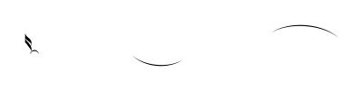
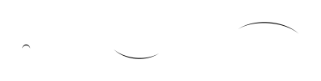

candidate #18
x=158.698

candidate #23
x=216.392
1/16 Down: conf=0.164 d=5.115

candidate #40
x=216.392
Every MusicSymbolCandidate inside the free-stem endpoint search radius is shown, including candidates rejected by geometry before PCA. The SVG is the exact smooth candidate geometry converted to contours for recognition.
| # | Candidate | Stem | Endpoint distance | PCA candidates | Verdict |
|---|---|---|---|---|---|
| 001 | candidate #18 | Down x=158.698 | 0 sp | — | rejected before PCA: width 0sp < 0.12sp |
| 002 | candidate #23 | Up x=216.392 | 0.49 sp | 1/8 Down: conf=0.180 d=4.565 1/16 Down: conf=0.164 d=5.115 | rejected by PCA |
| 003 | candidate #40 | Up x=216.392 | 0 sp | — | rejected before PCA: width 0sp < 0.12sp |
| # | Candidate | Stem | Endpoint distance | PCA candidates | Verdict |
|---|---|---|---|---|---|
| 004 |  candidate #79 | Up x=351.69 | 0 sp | — | rejected before PCA: width 0sp < 0.12sp |
| # | Candidate | Stem | Endpoint distance | PCA candidates | Verdict |
|---|---|---|---|---|---|
| 005 |  candidate #147 | Down x=431.09 | 0 sp | — | rejected before PCA: width 0sp < 0.12sp |
| 006 |  candidate #148 | Up x=438.015 | 0 sp | — | rejected before PCA: width 0sp < 0.12sp |
| 007 |  candidate #150 | Up x=438.015 | 0.629 sp | 1/8 Down: conf=0.180 d=4.565 1/16 Down: conf=0.164 d=5.115 | rejected by PCA |
| 008 |  candidate #150 | Up x=477.072 | 0 sp | 1/8 Down: conf=0.180 d=4.565 1/16 Down: conf=0.164 d=5.115 | rejected by PCA |
| 009 |  candidate #152 | Up x=477.072 | 0 sp | — | rejected before PCA: width 0sp < 0.12sp |
| 010 |  candidate #150 | Up x=516.384 | 0.495 sp | 1/8 Down: conf=0.180 d=4.565 1/16 Down: conf=0.164 d=5.115 | rejected by PCA |
| 011 |  candidate #154 | Up x=516.384 | 0 sp | — | rejected before PCA: width 0sp < 0.12sp |
| # | Candidate | Stem | Endpoint distance | PCA candidates | Verdict |
|---|---|---|---|---|---|
| 012 |  candidate #199 | Down x=564.606 | 0 sp | — | rejected before PCA: width 0sp < 0.12sp |
| 013 |  candidate #200 | Up x=564.856 | 0 sp | — | rejected before PCA: width 0sp < 0.12sp |
| # | Candidate | Stem | Endpoint distance | PCA candidates | Verdict |
|---|---|---|---|---|---|
| 014 |  candidate #268 | Down x=111.215 | 0.7 sp | 1/16 Down: conf=0.233 d=3.297 1/8 Down: conf=0.127 d=6.845 | rejected by PCA |
| 015 |  candidate #252 | Down x=111.215 | 0 sp | — | rejected before PCA: width 0sp < 0.12sp |
| 016 |  candidate #253 | Up x=118.14 | 0 sp | — | rejected before PCA: width 0sp < 0.12sp |
| 017 |  candidate #255 | Up x=118.14 | 0.671 sp | 1/8 Down: conf=0.171 d=4.839 1/16 Down: conf=0.167 d=4.979 | rejected by PCA |
| 018 |  candidate #255 | Up x=160.01 | 0 sp | 1/8 Down: conf=0.171 d=4.839 1/16 Down: conf=0.167 d=4.979 | rejected by PCA |
| 019 |  candidate #259 | Up x=160.01 | 0 sp | — | rejected before PCA: width 0sp < 0.12sp |
| 020 |  candidate #255 | Up x=201.62 | 0.454 sp | 1/8 Down: conf=0.171 d=4.839 1/16 Down: conf=0.167 d=4.979 | rejected by PCA |
| 021 |  candidate #264 | Up x=201.62 | 0 sp | — | rejected before PCA: width 0sp < 0.12sp |
| # | Candidate | Stem | Endpoint distance | PCA candidates | Verdict |
|---|---|---|---|---|---|
| 022 |  candidate #283 | Down x=244.22 | 0 sp | — | rejected before PCA: width 0sp < 0.12sp |
| 023 |  candidate #284 | Up x=315.952 | 0.49 sp | 1/8 Down: conf=0.168 d=4.97 1/16 Down: conf=0.167 d=4.97 | rejected by PCA |
| 024 |  candidate #286 | Up x=315.952 | 0.49 sp | 1/8 Down: conf=0.171 d=4.839 1/16 Down: conf=0.167 d=4.979 | rejected by PCA |
| 025 |  candidate #295 | Up x=315.952 | 0 sp | — | rejected before PCA: width 0sp < 0.12sp |
| # | Candidate | Stem | Endpoint distance | PCA candidates | Verdict |
|---|---|---|---|---|---|
| 026 |  candidate #319 | Down x=403.007 | 0 sp | — | rejected before PCA: width 0sp < 0.12sp |
| 027 |  candidate #323 | Up x=451.546 | 0 sp | — | rejected before PCA: width 0sp < 0.12sp |
| 028 |  candidate #324 | Up x=451.546 | 0.671 sp | 1/8 Down: conf=0.171 d=4.839 1/16 Down: conf=0.167 d=4.979 | rejected by PCA |
| 029 |  candidate #324 | Up x=493.156 | 0.496 sp | 1/8 Down: conf=0.171 d=4.839 1/16 Down: conf=0.167 d=4.979 | rejected by PCA |
| 030 |  candidate #326 | Up x=493.156 | 0 sp | — | rejected before PCA: width 0sp < 0.12sp |
| # | Candidate | Stem | Endpoint distance | PCA candidates | Verdict |
|---|---|---|---|---|---|
| 031 |  candidate #340 | Up x=544.176 | 0 sp | — | rejected before PCA: width 0sp < 0.12sp |
| 032 |  candidate #342 | Up x=657.815 | 0 sp | — | rejected before PCA: width 0sp < 0.12sp |
| # | Candidate | Stem | Endpoint distance | PCA candidates | Verdict |
|---|---|---|---|---|---|
| 033 |  candidate #365 | Down x=110.449 | 0 sp | — | rejected before PCA: width 0sp < 0.12sp |
| 034 |  candidate #368 | Up x=158.223 | 0 sp | 1/8 Down: conf=0.199 d=4.038 1/16 Down: conf=0.168 d=4.938 | rejected by PCA |
| 035 |  candidate #370 | Up x=158.223 | 0 sp | 1/8 Down: conf=0.185 d=4.403 1/16 Down: conf=0.161 d=5.23 | rejected by PCA |
| 036 |  candidate #371 | Up x=158.223 | 0 sp | — | rejected before PCA: width 0sp < 0.12sp |
| 037 |  candidate #376 | Up x=184.734 | 0 sp | — | rejected before PCA: width 0sp < 0.12sp |
| # | Candidate | Stem | Endpoint distance | PCA candidates | Verdict |
|---|---|---|---|---|---|
| 038 |  candidate #402 | Up x=335.61 | 0 sp | — | rejected before PCA: width 0sp < 0.12sp |
| # | Candidate | Stem | Endpoint distance | PCA candidates | Verdict |
|---|---|---|---|---|---|
| 039 |  candidate #414 | Down x=418.58 | 0 sp | — | rejected before PCA: width 0sp < 0.12sp |
| 040 |  candidate #415 | Up x=425.505 | 0 sp | — | rejected before PCA: width 0sp < 0.12sp |
| 041 |  candidate #417 | Up x=425.505 | 0.671 sp | 1/8 Down: conf=0.191 d=4.235 1/16 Down: conf=0.162 d=5.17 | rejected by PCA |
| 042 |  candidate #417 | Up x=466.604 | 0 sp | 1/8 Down: conf=0.191 d=4.235 1/16 Down: conf=0.162 d=5.17 | rejected by PCA |
| 043 |  candidate #419 | Up x=466.604 | 0 sp | — | rejected before PCA: width 0sp < 0.12sp |
| 044 |  candidate #417 | Up x=507.709 | 0.496 sp | 1/8 Down: conf=0.191 d=4.235 1/16 Down: conf=0.162 d=5.17 | rejected by PCA |
| 045 |  candidate #421 | Up x=507.709 | 0 sp | — | rejected before PCA: width 0sp < 0.12sp |
| # | Candidate | Stem | Endpoint distance | PCA candidates | Verdict |
|---|---|---|---|---|---|
| 046 |  candidate #432 | Down x=557.968 | 0 sp | — | rejected before PCA: width 0sp < 0.12sp |
| 047 |  candidate #433 | Up x=558.218 | 0 sp | — | rejected before PCA: width 0sp < 0.12sp |
| # | Candidate | Stem | Endpoint distance | PCA candidates | Verdict |
|---|---|---|---|---|---|
| 048 |  candidate #479 | Down x=111.215 | 0.575 sp | 1/16 Down: conf=0.233 d=3.297 1/8 Down: conf=0.127 d=6.845 | rejected by PCA |
| 049 |  candidate #463 | Down x=111.215 | 0 sp | — | rejected before PCA: width 0sp < 0.12sp |
| 050 |  candidate #464 | Up x=118.14 | 0 sp | — | rejected before PCA: width 0sp < 0.12sp |
| 051 |  candidate #466 | Up x=118.14 | 0.671 sp | 1/8 Down: conf=0.247 d=3.041 1/16 Down: conf=0.178 d=4.633 | rejected by PCA |
| 052 |  candidate #466 | Up x=162.558 | 0 sp | 1/8 Down: conf=0.247 d=3.041 1/16 Down: conf=0.178 d=4.633 | rejected by PCA |
| 053 |  candidate #470 | Up x=162.558 | 0 sp | — | rejected before PCA: width 0sp < 0.12sp |
| 054 |  candidate #466 | Up x=206.727 | 0.454 sp | 1/8 Down: conf=0.247 d=3.041 1/16 Down: conf=0.178 d=4.633 | rejected by PCA |
| 055 |  candidate #475 | Up x=206.727 | 0 sp | — | rejected before PCA: width 0sp < 0.12sp |
| # | Candidate | Stem | Endpoint distance | PCA candidates | Verdict |
|---|---|---|---|---|---|
| 056 |  candidate #491 | Down x=251.88 | 0 sp | — | rejected before PCA: width 0sp < 0.12sp |
| 057 |  candidate #492 | Up x=316.718 | 0.49 sp | 1/8 Down: conf=0.236 d=3.243 1/16 Down: conf=0.180 d=4.547 | rejected by PCA |
| 058 |  candidate #494 | Up x=316.718 | 0.49 sp | 1/8 Down: conf=0.247 d=3.041 1/16 Down: conf=0.178 d=4.633 | rejected by PCA |
| 059 |  candidate #503 | Up x=316.718 | 0 sp | — | rejected before PCA: width 0sp < 0.12sp |
| # | Candidate | Stem | Endpoint distance | PCA candidates | Verdict |
|---|---|---|---|---|---|
| 070 |  candidate #538 | Up x=558.729 | 0 sp | — | rejected before PCA: width 0sp < 0.12sp |
| # | Candidate | Stem | Endpoint distance | PCA candidates | Verdict |
|---|---|---|---|---|---|
| 076 |  candidate #594 | Down x=278.171 | 0 sp | — | rejected before PCA: width 0sp < 0.12sp |
| 077 |  candidate #599 | Up x=325.69 | 0 sp | 1/16 Down: conf=0.231 d=3.333 1/8 Down: conf=0.156 d=5.422 | rejected: PCA direction Down != stem Up |
| 078 |  candidate #601 | Up x=325.69 | 0 sp | 1/16 Down: conf=0.296 d=2.373 1/8 Down: conf=0.168 d=4.955 | rejected: PCA direction Down != stem Up |
| 079 |  candidate #602 | Up x=325.69 | 0 sp | — | rejected before PCA: width 0sp < 0.12sp |
| 080 |  candidate #604 | Up x=344.546 | 0 sp | — | rejected before PCA: width 0sp < 0.12sp |
| # | Candidate | Stem | Endpoint distance | PCA candidates | Verdict |
|---|---|---|---|---|---|
| 081 |  candidate #636 | Down x=439.516 | 0 sp | — | rejected before PCA: width 0sp < 0.12sp |
| 082 |  candidate #637 | Up x=439.547 | 0 sp | — | rejected before PCA: width 0sp < 0.12sp |
| 083 |  candidate #638 | Up x=439.547 | 0.671 sp | 1/8 Down: conf=0.245 d=3.083 1/16 Down: conf=0.175 d=4.713 | rejected by PCA |
| 084 |  candidate #638 | Up x=481.412 | 0 sp | 1/8 Down: conf=0.245 d=3.083 1/16 Down: conf=0.175 d=4.713 | rejected by PCA |
| 085 |  candidate #643 | Up x=481.412 | 0 sp | — | rejected before PCA: width 0sp < 0.12sp |
| 086 |  candidate #638 | Up x=523.022 | 0.495 sp | 1/8 Down: conf=0.245 d=3.083 1/16 Down: conf=0.175 d=4.713 | rejected by PCA |
| 087 |  candidate #645 | Up x=523.022 | 0 sp | — | rejected before PCA: width 0sp < 0.12sp |
| # | Candidate | Stem | Endpoint distance | PCA candidates | Verdict |
|---|---|---|---|---|---|
| 088 |  candidate #669 | Down x=572.26 | 0 sp | — | rejected before PCA: width 0sp < 0.12sp |
| 089 |  candidate #686 | Down x=572.26 | 0.329 sp | 1/16 Down: conf=0.225 d=3.446 1/8 Down: conf=0.212 d=3.713 | rejected by PCA |
| 090 |  candidate #671 | Up x=579.404 | 0 sp | — | rejected before PCA: width 0sp < 0.12sp |
| # | Candidate | Stem | Endpoint distance | PCA candidates | Verdict |
|---|---|---|---|---|---|
| 091 |  candidate #53 | Up x=165.841 | 0 sp | — | rejected before PCA: width 0sp < 0.12sp |
| # | Candidate | Stem | Endpoint distance | PCA candidates | Verdict |
|---|---|---|---|---|---|
| 092 |  candidate #83 | Down x=291.447 | 0 sp | — | rejected before PCA: width 0sp < 0.12sp |
| # | Candidate | Stem | Endpoint distance | PCA candidates | Verdict |
|---|---|---|---|---|---|
| 093 |  candidate #157 | Down x=431.09 | 0 sp | — | rejected before PCA: width 0sp < 0.12sp |
| # | Candidate | Stem | Endpoint distance | PCA candidates | Verdict |
|---|---|---|---|---|---|
| 094 |  candidate #271 | Down x=111.215 | 0 sp | — | rejected before PCA: width 0sp < 0.12sp |
| # | Candidate | Stem | Endpoint distance | PCA candidates | Verdict |
|---|---|---|---|---|---|
| 102 |  candidate #330 | Down x=403.007 | 0 sp | — | rejected before PCA: width 0sp < 0.12sp |
| # | Candidate | Stem | Endpoint distance | PCA candidates | Verdict |
|---|---|---|---|---|---|
| 103 |  candidate #358 | Down x=650.89 | 0 sp | — | rejected before PCA: width 0sp < 0.12sp |
| # | Candidate | Stem | Endpoint distance | PCA candidates | Verdict |
|---|---|---|---|---|---|
| 104 |  candidate #383 | Down x=110.449 | 0 sp | — | rejected before PCA: width 0sp < 0.12sp |
| # | Candidate | Stem | Endpoint distance | PCA candidates | Verdict |
|---|---|---|---|---|---|
| 105 |  candidate #406 | Down x=272.555 | 0 sp | — | rejected before PCA: width 0sp < 0.12sp |
| # | Candidate | Stem | Endpoint distance | PCA candidates | Verdict |
|---|---|---|---|---|---|
| 106 |  candidate #424 | Down x=418.58 | 0 sp | — | rejected before PCA: width 0sp < 0.12sp |
| # | Candidate | Stem | Endpoint distance | PCA candidates | Verdict |
|---|---|---|---|---|---|
| 107 |  candidate #482 | Down x=111.215 | 0 sp | — | rejected before PCA: width 0sp < 0.12sp |
| # | Candidate | Stem | Endpoint distance | PCA candidates | Verdict |
|---|---|---|---|---|---|
| 108 |  candidate #506 | Up x=259.023 | 0 sp | — | rejected before PCA: width 0sp < 0.12sp |
| # | Candidate | Stem | Endpoint distance | PCA candidates | Verdict |
|---|---|---|---|---|---|
| 109 |  candidate #534 | Down x=401.73 | 0 sp | — | rejected before PCA: width 0sp < 0.12sp |
| # | Candidate | Stem | Endpoint distance | PCA candidates | Verdict |
|---|---|---|---|---|---|
| 110 |  candidate #553 | Down x=654.975 | 0 sp | — | rejected before PCA: width 0sp < 0.12sp |
| # | Candidate | Stem | Endpoint distance | PCA candidates | Verdict |
|---|---|---|---|---|---|
| 111 |  candidate #577 | Down x=117.598 | 0 sp | — | rejected before PCA: width 0sp < 0.12sp |
| # | Candidate | Stem | Endpoint distance | PCA candidates | Verdict |
|---|---|---|---|---|---|
| 112 |  candidate #608 | Up x=285.315 | 0 sp | — | rejected before PCA: width 0sp < 0.12sp |
| # | Candidate | Stem | Endpoint distance | PCA candidates | Verdict |
|---|---|---|---|---|---|
| 113 |  candidate #649 | Down x=432.622 | 0 sp | — | rejected before PCA: width 0sp < 0.12sp |
| # | Candidate | Stem | Endpoint distance | PCA candidates | Verdict |
|---|---|---|---|---|---|
| 114 |  candidate #678 | Down x=572.26 | 0 sp | — | rejected before PCA: width 0sp < 0.12sp |
| 115 |  candidate #683 | Up x=620.8 | 0 sp | — | rejected before PCA: width 0sp < 0.12sp |
| 116 |  candidate #685 | Up x=662.155 | 0 sp | — | rejected before PCA: width 0sp < 0.12sp |


{kind=link}
{kind=link}
{kind=link}
{kind=link}
{kind=link}
{kind=link}